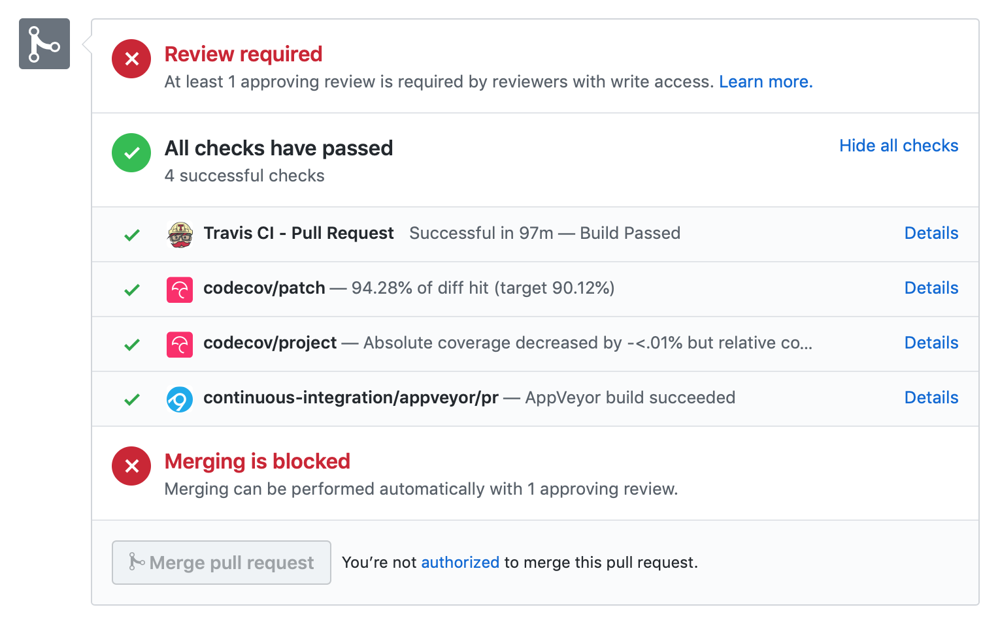
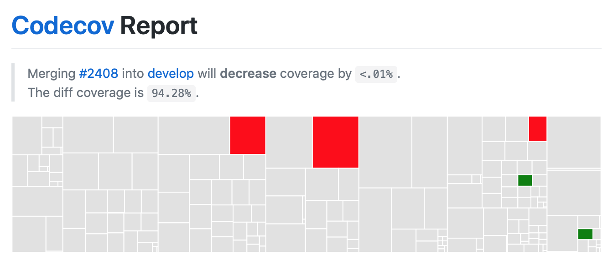
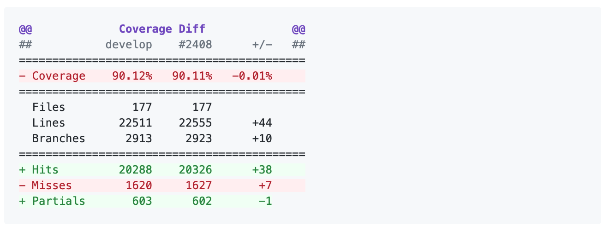
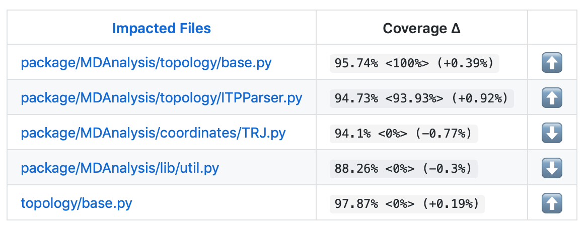
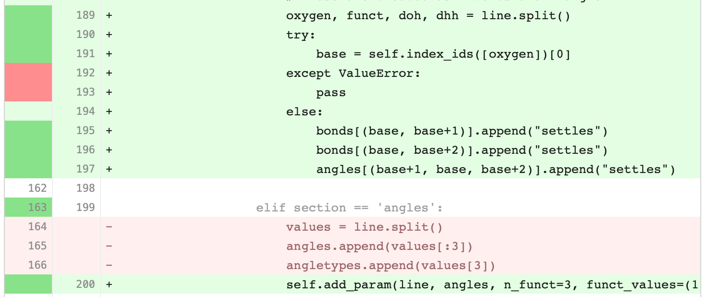
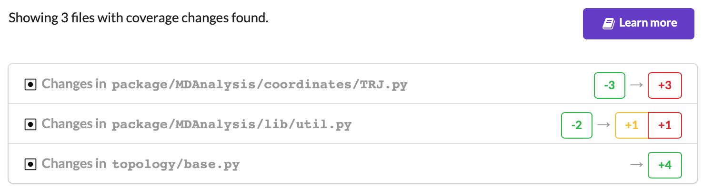

Tests in MDAnalysis¶
Note
Parts of this page came from the Contributing to pandas guide.
Whenever you add new code, you should create an appropriate test case that checks that your code is working as it should. This is very important because:
Firstly, it ensures that your code works as expected, i.e.
it succeeds in your test cases and
it fails predictably
More importantly, in the future we can always test that it is still working correctly. Unit tests are a crucial component of proper software engineering (see e.g. Software Carpentry on Testing) and a large (and growing) test suite is one of the strengths of MDAnalysis.
Adding tests is one of the most common requests after code is pushed to MDAnalysis. Therefore, it is worth getting in the habit of writing tests ahead of time so this is never an issue. We strive for ≥90% our code to be covered by tests.
We strongly encourage contributors to embrace test-driven development. This development process “relies on the repetition of a very short development cycle: first the developer writes an (initially failing) automated test case that defines a desired improvement or new function, then produces the minimum amount of code to pass that test.” So, before actually writing any code, you should write your tests. Often the test can be taken from the original GitHub issue. However, it is always worth considering additional use cases and writing corresponding tests.
Like many packages, MDAnalysis uses pytest and some of the numpy.testing framework.
Running the test suite¶
It is recommended that you run the tests from the mdanalysis/testsuite/MDAnalysisTests/ directory.
cd testsuite/MDAnalysisTests
pytest --disable-pytest-warnings
All tests should pass: no FAIL or ERROR cases should be triggered; SKIPPED or XFAIL are ok. For anything that fails or gives an error, ask on the mdnalysis-discussion mailing list or raise an issue on the Issue Tracker.
We use the --disable-pytest-warnings when the whole testsuite is running, as pytest raises a lot of false positives when we warn users about missing topology attributes. When running single tests or only single modules, consider running the tests with warnings enabled (i.e. without --disable-pytest-warnings). This allows you to see if you trigger any un-caught deprecation warnings or other warnings in libraries we use.
To run specific tests just specify the path to the test file:
pytest testsuite/MDAnalysisTests/analysis/test_align.py
Specific test classes inside test files, and even specific test methods, can also be specified:
# Test the entire TestContactMatrix class
pytest testsuite/MDAnalysisTests/analysis/test_analysis.py::TestContactMatrix
# Test only test_sparse in the TestContactMatrix class
pytest testsuite/MDAnalysisTests/analysis/test_analysis.py::TestContactMatrix::test_sparse
This is very useful when you add a new test and want to check if it passes. However, before you push your code to GitHub, make sure that your test case runs and that all other test cases are still passing.
Testing in parallel¶
Running the tests serially can take some time, depending on the performance of your computer. You can speed this up by using the plugin pytest-xdist to run tests in parallel by specifying the --numprocesses option:
pip install pytest-xdist
pytest --disable-pytest-warnings --numprocesses 4
You can try increasing the number of processes to speed up the test run. The number of processes you can use depends on your machine.
Test coverage¶
The tool pytest-cov can be used to generate the coverage report locally:
pip install pytest-cov
pytest --cov=MDAnalysis
Note: You can use the --numprocesses flag to run tests in parallel with the above command too. This will print the coverage statistic for every module in MDAnalysis at the end of a run. To get detailed line by
line statistics you can add the --cov-report=html flag. This will create a htmlcov folder (in the directory you run the command from) and there will be an index.html file in this folder. Open this file in your browser and you will be able to see overall statistics and detailed line coverage for each file.
Continuous Integration tools¶
When you submit your pull request, several continuous integration tools will run a suite of tests. These should all pass before your code can be merged into MDAnalysis. You can check tests locally by running the test suite.
If your pull request fails immediately with an Appveyor error, it is likely that you have merge conflicts with the latest code in the develop branch. Rebase your code and update your branch by pushing your changes.
If you get an error with Travis, it is likely that you’ve failed a particular test. You should update your code and push again.
If you get Codecov errors, this means that your changes have not been adequately tested. Add new tests that address the “missed” lines, and push again.
Ideally, you want all tests to pass. This will look like:

Appveyor¶
AppVeyor is a continuous integration/continuous deployment service. MDAnalysis uses it for testing builds on Windows.
Builds are configured in the file .appveyor.yml. If you add a new dependency to MDAnalysis, you will need to add it to the $CONDA_DEPENDENCIES or $PIP_DEPENDENCIES in .appveyor.yml to pass tests.
Travis¶
Travis is a continuous integration service for Linux and MacOS. MDAnalysis uses it for exhaustive testing on Linux systems, and some testing on MacOS. If you add a new dependency to MDAnalysis, you will need to add it to the $CONDA_DEPENDENCIES or $PIP_DEPENDENCIES in .travis.yml to pass tests.
Codecov¶
Code coverage measures how many lines, and which lines, of code are executed by a test suite. Codecov is a service that turns code coverage reports into a single visual report. Each line is described as one of three categories:
a hit indicates that the source code was executed by the test suite.
a partial indicates that the source code was not fully executed by the test suite; there are remaining branches that were not executed.
a miss indicates that the source code was not executed by the test suite.
Coverage is the ratio of hits / (sum of hit + partial + miss). See the Codecov documentation for more information.
MDAnalysis aims for 90% code coverage; your pull request will fail the Codecov check if the coverage falls below 85%. You can increase coverage by writing futher tests.
On your pull request, Codecov will leave a comment with three sections:
a visual map of the areas with coverage changes
a summary of changes in coverage
a list of files with changes

Clicking on one of those files will show the Codecov Diff view, highlighting the lines of code that have been missed by tests. In the image below, the column on the left hand side shows hits (green) and misses (red); the lighter colours highlighting the code show lines added (light green) or removed (light red).

Changing to the Coverage Changes view highlights how your additions have changed the test coverage. See the documentation for viewing source code for more information.

Writing new tests¶
Tests are organised by top-level module. Each file containing tests must start with test_. The tests themselves also have to follow the appropriate naming and organisational conventions.
Use classes to group tests if it makes sense (e.g., if the test class will be inherited by another test class and the code can be reused). We prefer subclassing over parametrizing classes (for examples, have a look at the MDAnalysisTests/topology module, where each class often tests a different file). For tests that are standalone, leave them as plain functions.
General conventions¶
Assertions¶
Use plain assert statements for comparing single values, e.g.
def test_foo_is_length_3(foo):
assert len(foo) == 3
To check equality up to a certain precision (e.g. floating point numbers and iterables of floats), use assert_almost_equal() from numpy.testing. Do not manually round off the value and use plain assert statements. Do not use pytest.approx.
from numpy.testing import assert_almost_equal
def test_equal_coordinates():
ref = mda.Universe(PSF, PDB_small)
u = mda.Universe(PDB_small)
assert_almost_equal(u.atoms.positions, ref.atoms.positions)
To test for exact equality (e.g. integers, booleans, strings), use assert_equal() from numpy.testing. As with assert_almost_equal(), this should be used for iterables of exact values as well. Do not iterate over and compare every single value.
from numpy.testing import assert_equal
def test_equal_arrays(array1, array2):
assert_equal(array1, array2)
Do not use assert_array_equal or assert_array_almost_equal from numpy.testing to compare array/array-like data structures. Instead, use assert_equal() or assert_almost_equal(). The former set of functions equate arrays and scalars, while the latter do not:
In [1]: from numpy.testing import assert_equal, assert_array_equal
In [2]: assert_array_equal([1], 1)
In [3]: assert_equal([1], 1)
---------------------------------------------------------------------------
AssertionError Traceback (most recent call last)
<ipython-input-3-fa6316479812> in <module>
----> 1 assert_equal([1], 1)
~/miniconda/envs/mda-user-guide/lib/python3.8/site-packages/numpy/testing/_private/utils.py in assert_equal(actual, desired, err_msg, verbose)
379 # isscalar test to check cases such as [np.nan] != np.nan
380 if isscalar(desired) != isscalar(actual):
--> 381 raise AssertionError(msg)
382
383 try:
AssertionError:
Items are not equal:
ACTUAL: [1]
DESIRED: 1
Do not use anything from numpy.testing that depends on nose, such as assert_raises.
Testing exceptions and warnings¶
Do not use assert_raises from numpy.testing or the pytest.mark.raises decorator to test for particular exceptions. Instead, use context managers:
def test_for_error():
a = [1, 2, 3]
with pytest.raises(IndexError):
b = a[4]
def test_for_warning():
with pytest.warns(DeprecationWarning):
deprecated_function.run()
Failing tests¶
To mark an expected failure, use pytest.mark.xfail() decorator:
@pytest.mark.xfail
def tested_expected_failure():
assert 1 == 2
To manually fail a test, make a call to pytest.fail():
def test_open(self, tmpdir):
outfile = str(tmpdir.join('lammps-writer-test.dcd'))
try:
with mda.coordinates.LAMMPS.DCDWriter(outfile, n_atoms=10):
pass
except Exception:
pytest.fail()
Skipping tests¶
To skip tests based on a condition, use pytest.mark.skipif(condition) decorator:
import numpy as np
try:
from numpy import shares_memory
except ImportError:
shares_memory = False
@pytest.mark.skipif(shares_memory == False,
reason='old numpy lacked shares_memory')
def test_positions_share_memory(original_and_copy):
# check that the memory in Timestep objects is unique
original, copy = original_and_copy
assert not np.shares_memory(original.ts.positions, copy.ts.positions)
To skip a test if a module is not available for importing, use pytest.importorskip('module_name')
def test_write_trajectory_netCDF4(self, universe, outfile):
pytest.importorskip("netCDF4")
return self._test_write_trajectory(universe, outfile)
Fixtures¶
Use fixtures as much as possible to reuse “resources” between test methods/functions. Pytest fixtures are functions that run before each test function that uses that fixture. A fixture is typically set up with the pytest.fixture() decorator, over a function that returns the object you need:
@pytest.fixture
def universe(self):
return mda.Universe(self.ref_filename)
A function can use a fixture by including its name in its arguments:
def test_pdb_write(self, universe):
universe.atoms.write('outfile.pdb')
The rule of thumb is to use the largest possible scope for the fixture to save time. A fixture declared with a class scope will run once per class; a fixture declared with a module scope will only run once per module. The default scope is "function".
@pytest.fixture(scope='class')
def universe(self):
return mda.Universe(self.ref_filename)
Testing the same function with different inputs¶
Use the pytest.mark.parametrize() decorator to test the same function for different inputs rather than looping. These can be stacked:
@pytest.mark.parametrize('pbc', (True, False))
@pytest.mark.parametrize('name, compound', (('molnums', 'molecules'),
('fragindices', 'fragments')))
# fragment is a fixture defined earlier
def test_center_of_mass_compounds_special(self, fragment,
pbc, name, compound):
ref = [a.center_of_mass() for a in fragment.groupby(name).values()]
com = fragment.center_of_mass(pbc=pbc, compound=compound)
assert_almost_equal(com, ref, decimal=5)
The code above runs test_center_of_mass_compounds_special 4 times with the following parameters:
pbc =
True, name ='molnums', compound ='molecules'pbc =
True, name ='fragindices', compound ='fragments'pbc =
False, name ='molnums', compound ='molecules'pbc =
False, name ='fragindices', compound ='fragments'
Temporary files and directories¶
Do not use os.chdir() to change directories in tests, because it can break the tests in really weird ways (see Issue 556). To use a temporary directory as the working directory, use the tmpdir.as_cwd() context manager instead:
def test_write_no_args(self, u, tmpdir): # tmpdir is an in-built fixture
with tmpdir.as_cwd():
u.atoms.write()
To create a temporary file:
def outfile(tmpdir):
temp_file = str(tmpdir.join('test.pdb'))
Module imports¶
Do not use relative imports in test files, as it means that tests can no longer be run from inside the test directory. Instead, use absolute imports.
from .datafiles import PDB # this is relative and will break!
from MDAnalysisTests.datafiles import PDB # use this instead
Tests for analysis and visualization modules¶
Tests for analysis classes and functions should at a minimum perform regression tests, i.e., run on input and compare to values generated when the code was added so that we know when the output changes in the future. (Even better are tests that test for absolute correctness of results, but regression tests are the minimum requirement.)
Any code in MDAnalysis.analysis that does not have substantial testing (at least 70% coverage) will be moved to a special MDAnalysis.analysis.legacy module by release 1.0.0. This legacy module will come with its own warning that this is essentially unmaintained functionality, that is still provided because there is no alternative. Legacy packages that receive sufficient upgrades in testing can come back to the normal MDAnalysis.analysis name space.
No consensus has emerged yet how to best test visualization code. At least minimal tests that run the code are typically requested.
Using test data files¶
If possible, re-use the existing data files in MDAnalysis for tests; this helps to keep the (separate) MDAnalysisTests package small. If new files are required (e.g. for a new coordinate Reader/Writer) then:
Use small files (e.g. trajectories with only a few frames and a small system).
Make sure that the data are not confidential (they will be available to everyone downloading MDAnalysis) and also be aware that by adding them to MDAnalysis you license these files under the GNU Public Licence v2 (or a compatible licence of your choice — otherwise we cannot include the files into MDAnalysis).
Add the files to the
testsuite/MDAnalysisTests/datadirectory and appropriate file names and descriptions totestsuite/MDAnalysisTests/datafiles.py.Make sure your new files are picked up by the pattern-matching in
testsuite/setup.py(in thepackage_datadictionary).